Estudio computacional de la influencia de elementos pasivos en un perfil aerodinámico
Spoilers sobre un NACA 2412 con ANSYS Fluent
- ANSYS Fluent
- k-ω SST
- MATLAB
- NACA 2412
Simulaciones CFD 2D estacionarias de un perfil NACA 2412 con un spoiler en el extradós en seis configuraciones, comparadas con los ensayos en túnel de viento de Lindsay y Walsh (2018).
Por qué importa
Los elementos pasivos que se añaden a un perfil alar, como un spoiler en el extradós, sirven para controlar el flujo. A ciertos ángulos de ataque pueden retrasar la separación de la capa límite y, con ella, la entrada en pérdida, aunque su efecto depende mucho del ángulo de ataque. Este trabajo evalúa su impacto mediante simulación numérica y comprueba hasta qué punto una simulación 2D estacionaria con ANSYS Fluent reproduce los ensayos en túnel de viento.
El perfil y el spoiler
Perfil NACA 2412 (curvatura máxima del 2 % a un 40 % de la cuerda y espesor máximo del 12 %) con un spoiler en el extradós definido por tres parámetros: posición a, longitud b y ángulo δ, expresados en porcentaje de la cuerda los dos primeros.
| Perfil | NACA 2412 |
| Configuraciones de spoiler | 6 (a = 60 %; b = 10 y 15 %; δ = 8°, 15° y 25°) y perfil limpio |
| Número de Reynolds | 783 761 |
| Cuerda y velocidad | 1 m y 11,68 m/s (aire a 20 °C) |
| Ángulos de ataque | de −8° a 32°, en pasos de 4° |
| Referencia experimental | Lindsay y Walsh (2018), túnel de viento |
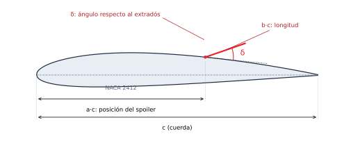
Cómo se ha hecho
Un flujo de trabajo en cuatro pasos, con ANSYS Fluent 2024 R1 y MATLAB:
- GeometríaCoordenadas del NACA 2412 calculadas en MATLAB con las ecuaciones de la serie de cuatro dígitos, y coordenadas del spoiler calculadas en Excel para cada combinación de a, b y δ.
- Dominio y mallaRegión rectangular de 12 × 8 m con malla triangular, refinada alrededor del perfil y con capas junto a la pared (detalle más abajo).
- Modelo físico y solverFlujo 2D, estacionario, incompresible y turbulento con RANS y modelo k-ω SST. Aire a 20 °C con velocidad de 11,68 m/s y ángulo de ataque variable. Residuos de convergencia de 10⁻³ (5 × 10⁻³ para k en algunos casos).
- ValidaciónComparación de CL, CD, Cp y eficiencia aerodinámica con los resultados experimentales de Lindsay y Walsh (2018), y análisis de mapas de presión y velocidad.
Dominio y malla
La región de estudio es un rectángulo de 12 × 8 m. La malla es triangular, con elementos de 21 mm en general y de 14 mm en un círculo de 1,5 m de radio alrededor del perfil, y con capas de 10 mm junto al contorno: 10 capas para el perfil limpio y los spoilers menores, y 5 para los de mayor tamaño.
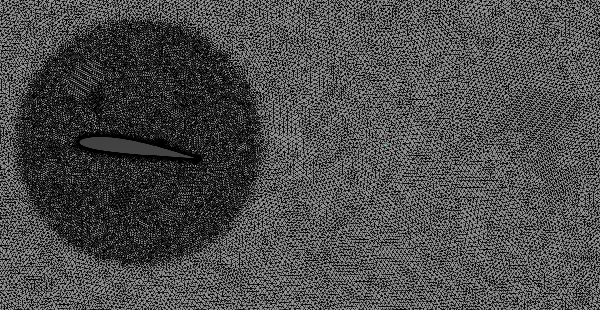
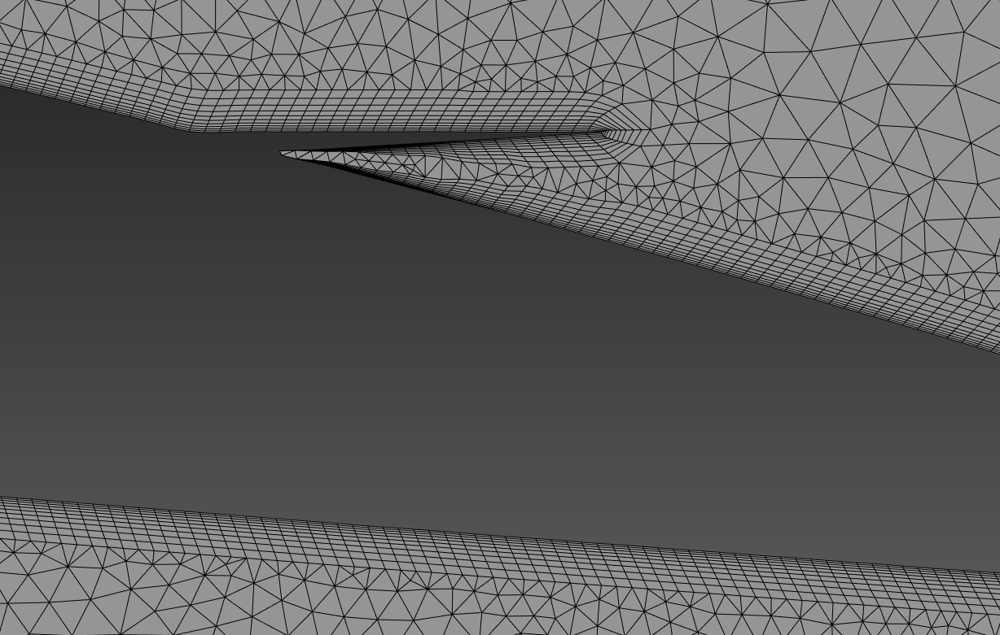
Qué se obtuvo
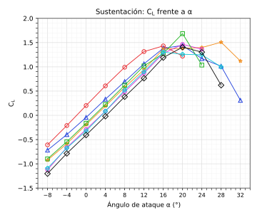
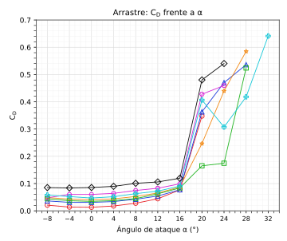
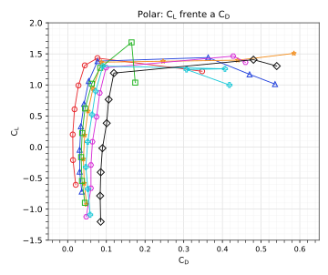
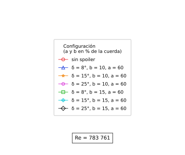
Resultados de las simulaciones para el perfil limpio y las seis configuraciones de spoiler.
Sustentación y entrada en pérdida
A ángulos de ataque bajos, el spoiler reduce la sustentación respecto al perfil limpio; a ángulos altos, en los que el perfil limpio ya está en pérdida, la mantiene elevada. Las simulaciones reproducen este comportamiento cualitativo y la entrada en pérdida del perfil limpio a unos 16°. Con spoiler, el ángulo del máximo de sustentación se desplaza a entre 20° y 28°. Cuantitativamente, el rango de variación de CL es más amplio que el experimental: a α = −8° el CL simulado va de −1,2 a −0,6 (frente a −0,8 y −0,4 en el experimento), y a ángulos altos alcanza 1,3–1,7 (frente a ~1,2).
| Configuración | CL,max | Variación | αmax |
|---|---|---|---|
| Sin spoiler | 1,432 | — | 16° |
| b = 10 ; δ = 8° | 1,441 | +0,63 % | 24° |
| b = 10 ; δ = 15° | 1,508 | +5,31 % | 28° |
| b = 10 ; δ = 25° | 1,464 | +2,23 % | 24° |
| b = 15 ; δ = 8° | 1,685 | +17,67 % | 20° |
| b = 15 ; δ = 15° | 1,303 | −9,01 % | 24° |
| b = 15 ; δ = 25° | 1,406 | −1,82 % | 24° |
Todas con a = 60 %. Variación de CL,max respecto al perfil sin spoiler.
El máximo de sustentación sube en cuatro configuraciones y baja en dos; en todas se alcanza a un ángulo mayor que sin spoiler.
Arrastre
Entre −8° y 16° el CD simulado es similar al experimental (entre 0,01 y 0,08 en ambos), con el menor valor para el perfil limpio. A partir de 20° aparecen diferencias notables: el CD experimental no supera 0,15, mientras que en las simulaciones supera 0,2 en todos los casos, con valores de 0,5–0,6 en algunos, y en el perfil limpio a 20° es casi cuatro veces el medido. Pueden contribuir las limitaciones de una simulación 2D estacionaria para representar la estela turbulenta tras la separación y que el método experimental de estimación del arrastre a partir de la presión en la estela tiende a infravalorarlo en pérdida.
Presiones
A α = 4° y 16° la correlación con los datos experimentales es buena: a 16° el pico de succión en el borde de ataque es de ≈ −7,5 en la simulación frente a −6,8 en el experimento. A 4° la simulación no reproduce el pico de succión que se ve en el experimento en el borde de ataque del perfil limpio. A 20° aparece una región con grandes fluctuaciones de Cp en la zona del spoiler, que puede indicar la entrada en pérdida o la separación del flujo.
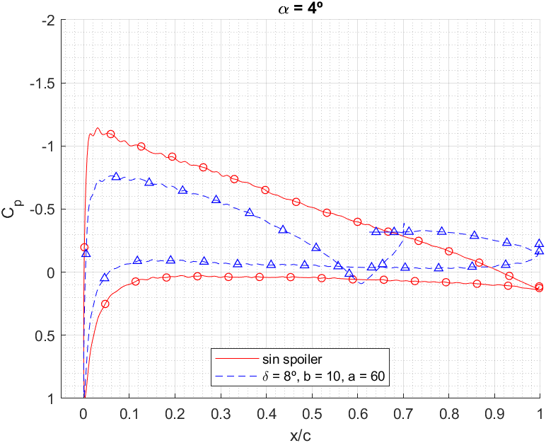
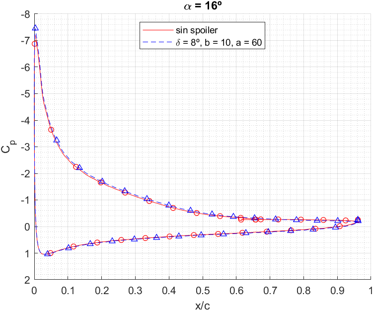
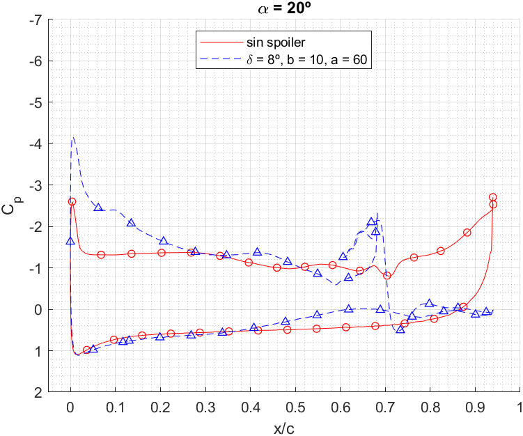
Estructura del flujo
A α = 20° el perfil limpio presenta separación en el borde de salida, con velocidades muy altas y baja presión, mientras que con el spoiler de δ = 8° el flujo se mantiene mayoritariamente adherido. Bajo el spoiler se forma una burbuja de recirculación: la burbuja de bisagra que se extiende desde el extradós se vuelve a ceñir al perfil aguas abajo, y esa región de baja presión ayuda a mantener la sustentación. Con δ = 15° y 25° las burbujas de separación son mayores y están más alejadas del perfil, y la estela más extensa penaliza la eficiencia.
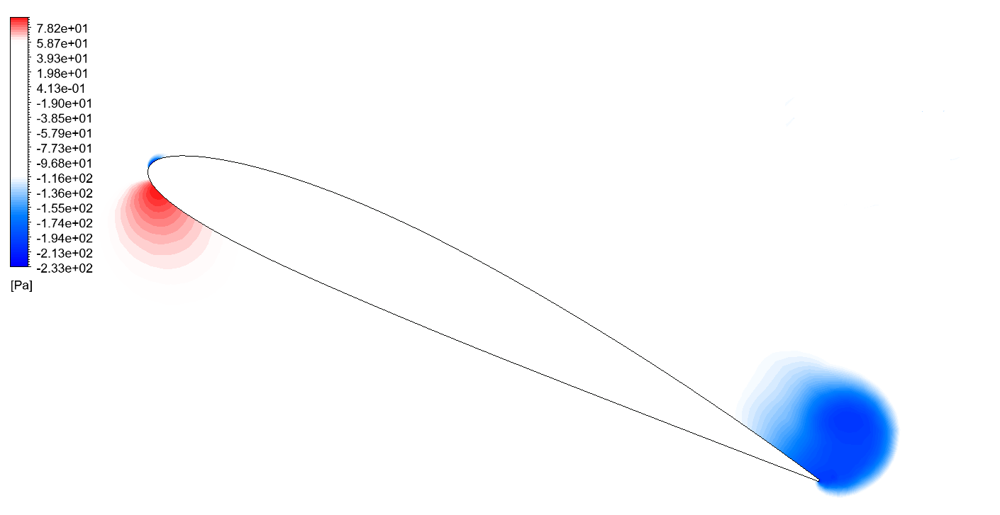
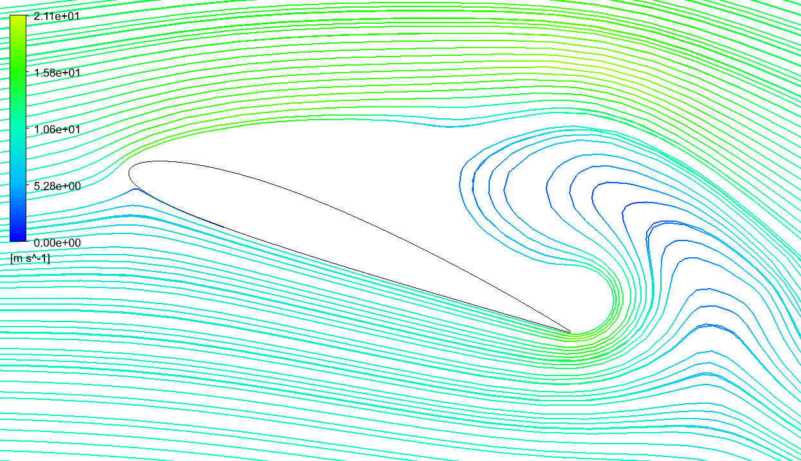
Configuraciones con a = 60 % y b = 10 %.
Eficiencia aerodinámica
El perfil limpio es el más eficiente (CL/CD) hasta 16°. Entre 16° y 24° la mejor configuración es b = 10, δ = 8°, y a partir de 24° lo es b = 15, δ = 25°, aunque en este último rango el modelo 2D estacionario no reproduce bien algunas configuraciones.
Limitaciones y trabajo futuro
- Las simulaciones son 2D y estacionarias, lo que limita la representación de la estela turbulenta tras la separación y se refleja en el arrastre sobreestimado a α ≥ 20°.
- Se usa una única herramienta y configuración numérica, un rango limitado de ángulos de ataque y seis configuraciones de spoiler; la precisión también depende de la resolución de la malla.
Como trabajo futuro, simular de forma no estacionaria los casos con mayores discrepancias respecto a los experimentos, para explorar si mejora la representación de la estela.
Referencias
Referencia experimental: S. D. Lindsay y P. Walsh, «Experimental investigation of spoiler deployment on wing stall», Open Journal of Fluid Dynamics, vol. 8, n.º 3, p. 308, 2018.